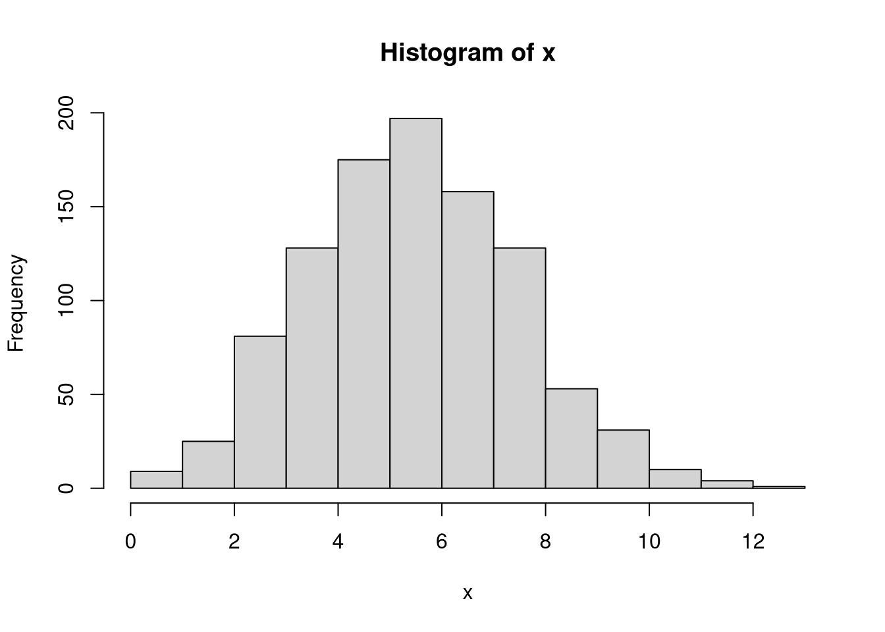

install.packages("remotes") # Allows you to install packages from GitHub
remotes::install_github("inqs909/inqstools") # Installs my R package for the courseRLab 1: Probability Distributions
Setup
If you want to use the custom R Markdown templates for this course install the following packages:
Probability
We will discuss several R functions used for different probability distributions
Distributions
To see what distributions R supports, use
?Distributionsor
help(Distributions)for more information. Every distribution has four different functions associated to them. The letter at the beginning of the distribution indicates the functions capabilities.
| Letter | Functionality |
|---|---|
| “d” | returns the height of the probability density function |
| “p” | returns the cummulative density function value |
| “q” | returns the inverse cummulative density function (percentiles) |
| “r” | returns a randomly generated number |
Probabilities
R can compute the probabilities of a distribution given the correct parameters. If you need the cummulative probability, p in front of the distribution function is needed. If you need the probability for a discrete distribution, the d in front of the distribution function is needed. Below are a few examples.
To find \(P(X \leq 3 )\) where \(X \sim Bin(6,0.4)\). Here we will use the pbinom() and we set q = 3, sizw = 6 and prob = 0.4.
pbinom(3, 6, 0.4)[1] 0.8208To find \(P(X \geq 7 )\) where \(X \sim Pois(2.3)\). Here we will use the ppois() and we set q = 6, lambda = 2.3, and lower.tail = F.
ppois(6, 2.3, F)[1] 0.009361934To find \(P(X = 10 )\) where \(X \sim Geo(0.3)\). Here we will use the dgeom() and we set x = 10 and p = 0.3.
dgeom(10, .3)[1] 0.008474257Percentiles
Percentiles identify the \(x_9\) that satisfies \(P(X \le x_0)=p\), where p is the percentile.
Finding the \(95^{th}\) percentile from a \(Bin(50, 0.6)\), we will use the qbinom(). We will set size=50, prob=0.6, and p=0.95.
qbinom(.95, 50, 0.6)[1] 36Finding the \(95^{th}\) percentile from a \(Pois(6.3)\), we will use the qpois(). We will set lambda=6.3 and p=0.95.
qpois(.95, 6.3)[1] 11Random Number Generator
R is capable of generating random numbers. For example if we want to generate a random sample of size fifty from a normal distribution with mean eight and variance three, we will use the rnorm(). If we want to generate a random sample from any distribution, use the distribution function with r in front of it.
Let’s first generate the random sample of fifty from \(X \sim Bin(75, .3)\). This is done with the rnorm() and setting n = 50, size = 75 and prob = .3.
rbinom(50, 75, 0.3) [1] 24 18 23 23 27 21 24 14 26 22 30 25 26 27 19 32 20 24 23 25 25 18 19 18 24
[26] 25 14 23 20 26 24 30 23 23 27 24 19 19 24 29 26 18 21 15 21 25 21 22 27 21No let’s generate a random sample of 100 form an \(X \sim Geo (0.4)\). This is done by using the rgamma() and setting n = 100 and prob = 0.4.
rgeom(100, .4) [1] 3 0 0 1 0 0 0 2 4 3 2 0 4 0 0 5 0 0 0 0 1 0 0 0 0
[26] 1 0 2 2 3 0 0 1 0 2 1 0 0 0 1 0 12 4 3 1 0 0 1 7 0
[51] 0 1 1 1 0 0 0 3 3 7 4 4 0 4 0 5 1 0 0 4 1 2 2 0 1
[76] 3 0 2 0 0 5 0 1 3 1 0 1 4 3 0 0 1 1 3 4 1 6 1 1 0Histograms
Histograms are used to plot the frequencies of observed values of a random variable. This provides a rough estimate of how a distribution function will look like. Below, we will use the hist() function to plot the distribution of a random sample of 1000 generated from a \(Bin(20, 0.3)\):
x <- rbinom(1000, 20, 0.3)
hist(x)
Looking at the plot above, we can see that the mos common values are around 6. This is to be expected because the \(E(X)=6\) from the binomial distribution. Another way to roughly estimate the expected value is by taking the mean:
mean(x)[1] 6.014Notice how close it is to the expected value. If we are interested in computing the \(E(X^2)\), we can roughly estimate it by squaring all the values and taking the mean of it:
mean(x^2)[1] 40.318Now, we know that the variance of a binomial distribution is \(np(1-p)\) which leads the \(Var(X)=4.2\) with the above distribution. We can roughly estimate the variance with the rough estimates of \(E(X^2)-E(X)^2\):
mean(x^2) - mean(x)^2[1] 4.149804While it is not exact, it can give you a rough idea.
Problems
Use an RMD file to answer the following questions:
- Find the following probabilities:
\(X\sim Bin(30, .35)\); Find \(P(2 \le X \le 6)\)
\(X\sim Pois(6.8)\); Find \(P(2 \le X \le 20)\)
\(X\sim Geo(0.5)\); Find \(P(X=4)\)
\(X\sim NegBinom(6, .8)\); Find \(P(3 \le X \le 4)\)
- Find the following percentiles:
- \(X\sim Pois(31.5)\); Find the \(68\)th percentile.
- \(X\sim Bin(71, .8)\); Find the \(52\)th percentile.
- \(X\sim Geo(0.4)\); Find the \(43\)th percentile.
- Generate the 50 realizations of the following random variables: (SKIP)
\(X\sim Multinomial(20, 0.5)\)
\(X\sim Weibull(3,2)\)
\(X\sim Laplace(2,1/2)\)1
\(X\sim LogNorm(0.5, \sqrt 2)\)
- Generate 500 realizations of the following random variables and create a histogram:
\(X\sim Pois(1)\)
\(X \sim Pois(2)\)
\(X \sim Pois(5)\)
\(X\sim Pois(10)\)
- Generate 5000 realizations of \(X\sim Pois(15)\) and compute the following rough estimates:
\(E(X)\)
\(E(X^2)\)
\(Var(X)\)
Submit your Lab assignment as an RMD file in Canvas on 2/24/2022 by 11:59 PM.
Footnotes
You will need to install the VGAM R package.↩︎